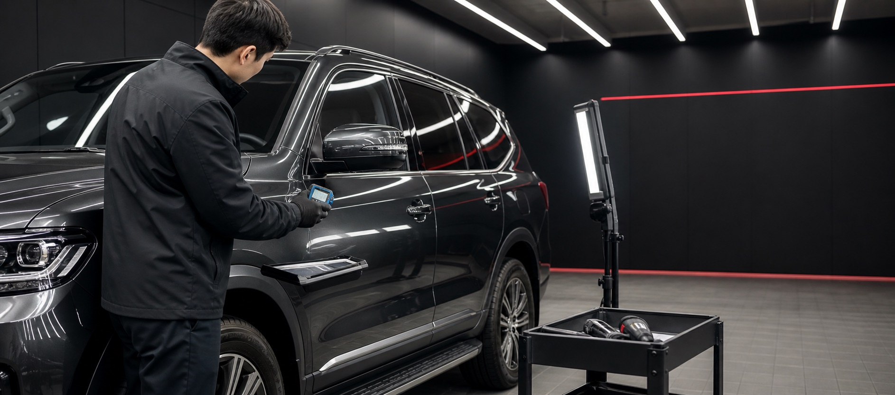

Запрос и анализ
✓Бюджет, модель и приоритеты.
Проверяем выбранный автомобиль в Корее, показываем каждую статью расходов и документируем путь до передачи в Баку.
Фотографии объявления не показывают полную историю автомобиля. Поэтому решение основывается на проверяемых данных.

ДЕМО · ЭКСПЕРТНАЯ ПРОВЕРКАКузов, толщина краски, двигатель, трансмиссия, электроника, пробег и документы.
У каждого этапа есть статус и подтверждающий документ.
Бюджет, модель и приоритеты.
Короткий список подходящих авто.
Осмотр и видеоотчет.
Расходы и обязательства.
Оформление после подтверждения.
Порт и маршрут доставки.
Финальное оформление в Баку.
Это демо-форма. В рабочей версии запрос поступит менеджеру Auto Import Platform.